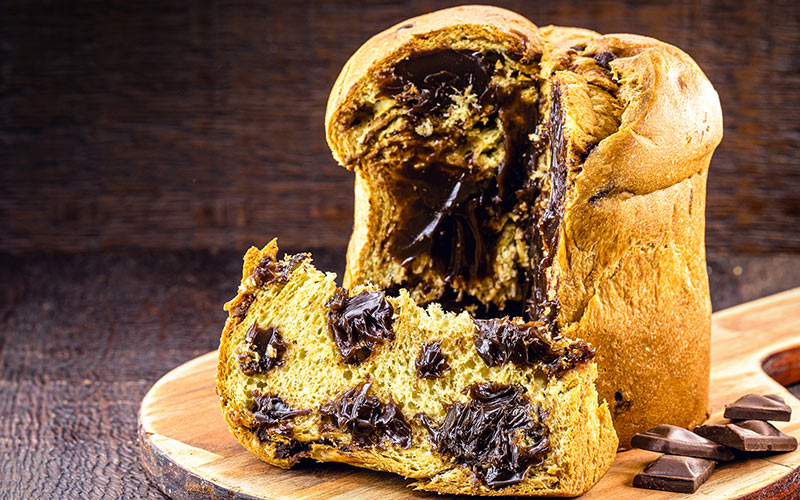

Ingredientes
- 2 tabletes de fermento biológico (30 g)
- 1 colher (sobremesa) de sal
- 1 xícara (chá) de leite
- 2 xícaras (chá) de Água
- 1 colher (chá) de essência de panetone
- 3 ovo
- 6 colheres (sopa) de manteiga
- 1 xícara (chá) de açúcar
- 1 kilo de farinha de trigo
- 1 xícara(chá) de chocolate amargo cortado em pedaços não muito pesquenos
Modo de Preparo
- aqueça o forno a 180 °C.
- Bata no liquidificador, na velocidade pulsar, o fermento e o sal.
- Adicione o leite, a água e a essência de panetone e bata novamente na velocidade pulsar.
- Adicione os ovos e bata por alguns segundos.
- Transfira esse líquido para a batedeira e acrescente a manteiga.
- ligue a batedeira na velocidade baixa e adicione o açucar aos poucos.
- bata até ficar homogêneo e desligue o motor.
- junte 1 kg de farinha aos poucos e misture até que forme uma massa grundenta.
- Polvilhe uma superfície lisa com a farinha restante e despeje a massa.
- Trabalhe a massa com as mãos até que ela comece a se desgrudar da superfície e das mãos.
- DIvida a massa em 4 partes e coloque, em cada uma,1/4 de xícara (chá) de pedaços de chocolate.
- Trabalhe a massa mais um pouco para incorporar bem i chocolate e coloque cada massa em uma forma própria para panetone de 500g.
- Asse até dourar.